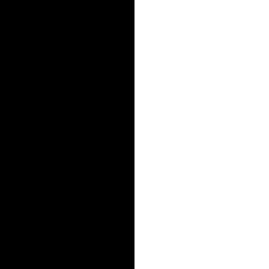

Project Overview
In this project I experiment with 2D convolutions, filtering, but also with image frequencies.
I will make hybrid images that can be seen differently depending on the distance between the human eyes and the image.
Finally, I blend two images together with a mask, and the Gaussian and Laplacian stacks of those images. This gives pretty cool results like this image.
This project is also a good excuse to show the pictures of my travels over the years.

Multiresolution Blending !
Fun with filters !
1.1 Convolution From scratch

Original Image

Gray Scale Image

Gray Scale convolved with box filter

Vertical Edges

Horizontal Edges
This image of me was taken at the Shkhara Glacier, the highest peak of the country of Georgia. The glacier sits on the border with Russia.
Method 1
def zero_padding(image, n = 1):
return np.pad(image, pad_width= n, mode= "constant")
def convolution(image, filter):
filter = np.flip(filter)
center_i = filter.shape[0] // 2
center_j = filter.shape[1] // 2
pad_index = max(center_i, center_j)
padded_image = zero_padding(image, n = pad_index)
height, width = padded_image.shape
new_image = np.zeros((height, width))
for i in range(height):
if i < center_i or i >= height - center_i :
continue
for j in range(width):
if j < center_j or j >= width- center_j:
continue
value = 0
for k in range(0-center_k, filter.shape[0] - center_k, 1):
for h in range(0 - center_h, filter.shape[1] - center_h, 1):
value += padded_image[i + k][j + h]
* filter[center_k + k][center_h + h]
new_image[i][j] = value
return new_image[pad_index:-pad_index,pad_index:-pad_index]
Method 2
def convolution_2_for_loops(image, filter):
filter = np.flip(filter)
center_i = filter.shape[0] // 2
center_j = filter.shape[1] // 2
pad_index = max(center_i, center_j)
padded_image = zero_padding(image, n = pad_index)
height, width = padded_image.shape
new_image = np.zeros((height, width))
for i in range(height):
if i < center_i or i >= height - center_i :
continue
for j in range(width):
if j < center_j or j >= width- center_j:
continue
new_image[i,j] = np.sum(filter * padded_image
[i-center_i:i+center_i+1, j-center_j:j+center_j+1])
return new_image[pad_index:-pad_index,pad_index:-pad_index]
In this section I wrote two functions to perform convolution on images with convolution filters. The filter (kernel) slides across the image, multiply neighbor pixels with its coefficients, and then sum then to get a final value for that specific pixel. This operation is done on the whole image. Here we first use a box kernel to blur the image, by taking the average of all the close neighbors. The following filters $$ D_x = \begin{bmatrix} 1 & 0 & -1 \end{bmatrix}, \qquad D_y = \begin{bmatrix} 1 \\ 0 \\ -1 \end{bmatrix} $$ informs us of the change of pixel brightness with their neighbors. $D_x$ calculate the horizontal change in intensity and $D_y$ the vertical change in intensity.
| Convolution | 4 for loops | 2 for loops | scipy.signal.convolve2d |
|---|---|---|---|
| 9x9 Box Filter | 55s | 5.3s | 0.1s |
| Derviative Filters | 3.5s | 5.4s | 0.1s |
As expected, the more loops in the function, the longer the runtime is. SciPy being written in C, the runtime is much faster than any code that can be written in pure Python. For some reasons I don't understand, the convolution is quicker with 4 loops rather than 2 loops for the derivative filters.
In my code, I pad the edges of the image with $k$ zeros, $k$ being the dimension of the kernel divided by 2 and rounded down. This allows for even pixels in the corners to be computed. However, those pixels will tend to be darker because 0 values are counted in the average.
I used the parameters mode="full",
boundary="fill", and fillvalue=0, which does the
same thing as I did in my own functions. In both cases, the convolution will
give images with larger dimensions, which I immediately slice to get a convolved
image with the same shape as the original.
1.2 Finite Difference Operator

$D_x$ — Partial derivative in x

$D_y$ — Partial derivative in y

Gradient magnitude
Choosing the Threshold
Here I experimented with different thresholds for binarizing the gradient magnitude image. The goal is to suppress noise while preserving the real edges in the image.
Gradient magnitude is computed as such : $G = \sqrt{D_x^2 + D_y^2}$
The grass on the gradient magnitude image is seen as an edge, but it not something that is worth being noted in for edge detection. The following images show the results for different threshold of gradient magnitude. If the magnitude is over this threshold, the pixel takes a value of 1 (white), else it becomes 0. The threshold I found the best is 0.15. It shows all real edges but still retains some noise, on the grass for example.

Original image

Threshold = 0.3

Best Threshold = 0.15

Threshold = 0.05
1.3 Derivative of Gaussian Filters
To remove this noise, I will use a Gaussian filter G to create a blurred version of the original image, and try the same experiment the previous paragraph. Because convolution is commutative, I created derivative of Gaussian (DoG) filters by convolving the Gaussian filter with $D_x$ and $D_y$. This yields the same results as smoothing the image with the Gaussian filter first, and then applying each derivative filter.

$G * D_x$

$G * D_y$
Here are the results after the convolution of those filters with the cameraman image :
Original Image $I$
Image blurred with Gaussian ($I * G$)

$I * G * D_x$
$I * G * D_y$

Gradient Magnitude, Threshold = 0.1

Gradient Orientations
Bells & Whistles: The last image shows the gradient orientations viewed in HSV color space. It shows the angle of the direction where pixel intensity changes the most rapidly to local edges. Each angle $\theta$ is calculated with $\theta = \operatorname{arctan2}(G_y, G_x)$. I computed this angle for every pixel on the image, then used the same threshold as the gradient magnitude image to keep the relevant edges.
Part 2.1: Unsharp Mask Filter
Here, we also use a Gaussian mask to blur the image, losing the details of the image. Images of the details are represented by the highest frequenciues of the image. For example, the PFK colonel is harder to see on the blurred image.
If we want to have sharper details in our image, we can add the high frequencies of the image to our original image. Substracting the blurred image (low frequencies) to the original image gives us the high frequencies.
Taj Mahal

Original

Blurred (Low-pass Filter)

High frequencies (original - blurred)

Sharpened (original + original - blurred )
PFK in Montréal

Original

Blurred

High frequencies

Sharpened

Taj Blurred then Sharped

PFK Blurred then Sharped
If you first blur an image, you lose its detail and high frequencies. Trying to sharpen it again will not return the original image, because the blurred image lost the high frequencies and cannot recover them just from the blurred image.
PFK is the Québec version of KFC. This is the only place where I have seen so many companies change their names so they can be said in the local language. s
Effect of Sharpening Amount
The sharpening amount is controlled by the parameter $\alpha$. I experimented with four different values of $\alpha$ at different scales to observe how the sharpening effect changes.
The unsharp mask can also be expressed as a single convolution. Starting from $I_{\text{sharp}} = I + \alpha(I - I * G)$, this can be rewritten as $I_{\text{sharp}} = I * [(1+\alpha)\delta - \alpha G]$, where $\delta$ is the impulse filter.

$\alpha = 0.5$

$\alpha = 1$

$\alpha = 1.5$
$\alpha = 5$
As alpha slowly increases from 0.5 to 1.5, you can see that the bricks become more and more distinguishable. When alpha reaches 5, the sharp lines on the cars become much more pronounced.
Part 2.2: Hybrid Images
The human eye sees high frequency when physically close to the image, or if the image is big enough. However, the further the eye is from the image, the less high frequencies the eye can visualize. By removing the high frequency of an image, and using mostly high frequencies of another, we can use this fact to create hybrid images that are seen differently depending on how far you are from the image.
Derek + Nutmeg
Here, we will blend the image of Derek Hoiem and his former cat (I think).
Original Images

Derek

Nutmeg
Aligned Images
For the trick to be successful, we first need to algin the images so they can blend correctly. We align both images so both pair of eyes are aligned.

Aligned Derek

Aligned Nutmeg
Frequency Analysis
By computing the log magnitude of the Fourier Transform of both images (converted to grayscale), we can analyze the frequencies present in each image. The brighter the dots are, the more dominant the corresponding frequencies are. The further away a point is from the center, the higher the frequency it represents.
I computed the log magnitude using
np.log(np.abs(np.fft.fftshift(np.fft.fft2(gray_image)))).

Derek Fourier transform

Nutmeg Fourier transform
Filtered Images
I decided to blur Derek's picture and apply an unsharp filter to Nutmeg's picture, using both images in grayscale. For both filters, there is a specific kernel size and a $\sigma$ value, which is the standard deviation of the Gaussian filter.

Low-pass filtered Derek

High-pass filtered Nutmeg
Cutoff Choice

$\sigma_{\mathrm{low}} = 3,\quad \sigma_{\mathrm{high}} = 1,\quad k = 25$

$\sigma_{\mathrm{low}} = 10,\quad \sigma_{\mathrm{high}} = 5,\quad k = 25$

$\sigma_{\mathrm{low}} = 100,\quad \sigma_{\mathrm{high}} = 500,\quad k = 3$
After testing different combinations of parameters and visually evaluating the hybrid from different distances, I found the following combination to give the best result:
\[ \sigma_{\mathrm{low}} = 10,\qquad \sigma_{\mathrm{high}} = 5,\qquad k = 25 \]
I chose $\sigma_{\mathrm{low}} = 10$ to sufficiently blur Derek's image so that its low-frequency structure becomes visible from a distance. For the high-frequency component, $\sigma_{\mathrm{high}} = 5$ preserved enough detail from the second image without making the hybrid too sharp or noisy. A kernel size of $k = 25$ provided enough spatial support for both Gaussian filters.
Final Hybrid

Hybrid Image 2

Full bowl from Toss Noodle Bar

Empty bowl

I ate it all
Hybrid Image 3

My cat Kya

Some lion

Both dangerous
If you walk far enough from your computer, you can see on the hybrid images either the Derek's face, the full bowl or my cat.
Bells & Whistles : Color Hybrid Images
Grayscale

Color in low-frequency

Color in high-frequency

Color in both
For a hybrid image to be effective, the colors of both images have to be similar enough. In grayscale, this is naturally the case. When adding color to one or both of the images, their colors become distinguishable enough to ruin the trick.
I find that using color in the high-frequency component works pretty well from close up, but not as much when looking from a distance. Whenever the low-frequency component is colored, Derek's smile and lips become much more pronounced.
Part 2.3: Gaussian and Laplacian Stacks
In this part, we will blend two images together thanks to Gaussian and Laplacian stacks, and a binary filter.
A Gaussian stack is a sequence of increasingly blurred images. A Laplacian stack captures the high-frequency details between the $i$th and $(i+1)$th levels of the Gaussian stack.
Specifically, each Laplacian level is computed as the difference between two consecutive Gaussian levels: \[ L_i = G_i - G_{i+1} \] Because $G_{i+1}$ is a more blurred version of $G_i$, their difference removes the information that is common to both and preserves the higher-frequency details present in $G_i$.
Orange Gaussian Stack

Level 0 = original

Level 1

Level 2

Level 3

Level 4
Apple Gaussian Stack

Level 0 = original

Level 1

Level 2

Level 3

Level 4
Orange Laplacian Stacks

Level 0

Level 1

Level 2

Level 3
Level 4 of Gaussian Stack
Apple Laplacian Stack

Level 0

Level 1

Level 2

Level 3
Level 4 of Gaussian Stack
Using the Gaussian and Laplacian stacks, we can reconstruct the original image by adding the most blurred Gaussian image to all of the Laplacian levels. For a stack of size 5, where $G_4$ is the most blurred image:
\[ I = G_4 + \sum_{i=0}^{3} L_i \]
Since each Laplacian level is defined as $L_i = G_i - G_{i+1}$, the intermediate Gaussian levels cancel out when summed, leaving the original image $G_0$.
We will blend the two images together by using their Gaussian and Laplacian stacks, and this binary seam filter and its Gaussian stack.
By blending the Laplacian values of each image using the corresponding Gaussian value of the mask at each level, we can smoothly combine the two images. This produces a combination of both images that looks surprisingly realistic.
At each level $i$, I computed the blended Laplacian as
\[ L_i^{\mathrm{blend}} = M_i \cdot L_i^A + (1-M_i)\cdot L_i^B \]where $M_i$ is the $i$th level of the Gaussian stack of the mask.
Finally, I reconstructed the blended image by summing the blended Laplacian levels:
\[ I_{\mathrm{blend}} = \sum_i L_i^{\mathrm{blend}}. \]
Binary Filter
I used $\sigma = 2$, which is doubled at every level, with a kernel size of $43$. The stack size is $4 + 1$, including the original image.
I applied the Gaussian and Laplacian stacks to the Apple and Orange images to recreate the different stages shown in Figure 3.42. The left and middle columns show the original Laplacian stacks weighted by the filter. The right column shows the average contribution of the final image per level. The first row is level 0, the second is level 2, and the third is level 4. The last level is the sum of the interpolation.


Oraple !
Multiresolution blending from my own pictures


Memorial in the mountains !


Me in Costa Rica
Bells & Whistles
To improve the results of the hybrid imges using colors. The first thing I did was to create a filter that is not just black and white, but different for the red color channel. I made this choice because those two images rely a lot on theiur red channel. Instead of having a sharp mask at first, I make it blend from 0 to 1 hoping to smooth the result. I also decided to convert the image to HSV and doubled the saturation of the image, which in my opinion improves the color of the image, making it less yellow-ish.

Apple, saturated

New filter

Orange, saturated

Better looking oraple
Most important thing I learned
This project taught me how low and high frequencies can be used and visualized, and what is their impact on the visualization of an image. I think it is fascinating that an image can be seen differently from different distances. High frequencies from close up and low frequencies from far away. I also found interesting how Gaussian and Laplacian stacks work. The fact that adding all different levels of detail to a single blurred image giving the original image makes sense mathematically, but I find that it is fascinating to actually visualize those details and how they slowly add up.